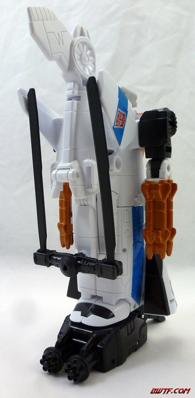

Allegiance:
Autobot
Size
: Deluxe
Difficulty of Transformation to Robot:
Easy
Difficulty of Transformation to Leg
:
Very Easy
Difficulty of Transformation to Arm
:
Very Easy
Color Scheme
: White, black, and
some semi-metallic orange, dull metallic bronzish brown, light milky gray,
and blue
Rating
: 8.2
Alpha Bravo is the new
Aerialbot on the team, and his alt mode is a helicopter. An... oddly long
helicopter, at that. I realize that a good part of this is so that he'll
be the same length as other Combiner Wars deluxes in his limb modes, but
in this mode he just looks off a bit because of that extra length. The
robot arms are also painfully obvious on the sides-- the hands are partially
covered up by three molded-in missiles on each side, but it doesn't do
a good enough of a job. From the back end you can also see just a little
of Alpha Bravo's head and upper chest, but that's a minor issue compared
to the other two. These negatives aside, this mode otherwise looks great
and is fairly well-proportioned. The mold detailing is quite well-done,
with all the little lines and such across a helicopter that you'd expect,
along with a few extra little details like the gear teeth-like details
on the robot shoulders and the pistons on the rotors. Speaking of said
rotors, they rotate pretty freely in this mode and there aren't any clearance
issues, so no worries there. Alpha Bravo borrows his general color scheme
heavily from the Aerialbot he's replacing (Slingshot/Quickslinger), and
is mostly a rather simple color scheme of white and black in this mode.
If that were all he'd be rather boring, but the blue stripes along the
side really contribute quite well to the color scheme and make him more
visually interesting, and the dull bronze-brown on the missiles adds a
little extra color as well. The angular cockpit windows are also painted,
which looks great against the white. I do wish his tail rotor had a bit
of paint, but otherwise he's pretty well-covered in this mode, even if
I wish his color scheme was a bit more original overall. He doesn't have
landing gear, but you can stick the hand-foot-gun accessory that all CW
deluxes have into a port on the underside to give him a "stand" of sorts.
(This accessory has gatling guns on the toes/knuckles-- one of my favorite
variations on this basic weapon design.) Alpha Bravo also has a more "normal"
gun, which can fit into one of the 5mm ports on either side of this mode,
near the top to the rear of the rotor.
One important about
Alpha Bravo's transformation-- when pulling the kneecap-tabs out from their
slots on the top of the vehicle mode, be a bit careful. Doing it too fast
can cause the tab section to break off, which is unfortunately what happened
with mine (hence why I'm using someone else's pictures in this review).
Alpha Bravo's robot mode is... certainly a "pre-tool" for Vortex! Alpha
Bravo is generally quite well-proportioned in this mode, with decently
thick arms and well-proportioned head and chest. His legs look alright,
albeit with a few weaknesses-- they look too skinny from a strictly head-on
view, and from the side on the interior, there's a bit of unsightly gap
below where the halves of his lower legs peg together. Most of the helicopter
bits get out of the way or-- even better-- make Alpha Bravo's silhouette
more unique in this mode. I love how the rear fins and tail rotor fold
back and sit behind his upper back without getting in the way of any articulation.
(The end of the tail rotor can also rotate, if you want to have his tailfin
pointing left or right.) The way the front section of the helicopter either
folds up onto the sides of his lower legs or becomes his feet is also a
nice use of those vehicle bits. The sole exception to this are the rotors,
which fold up behind his back a bit, but don't peg in anywhere. Given how
obviously loose the rotor is for spinning, this means it tends to get out
of its set position very easily and swing around in an unsightly and slightly
annoying manner. As for the detailing, Alpha Bravo's headsculpt is extremely
well-done and crisp, with a nice blue visor, and the orange on the middle
crest and faceplate look nice-- even if it is very very obviously Vortex's
headsculpt, to be reused later down in the line. The sculpting on his chest
looks decent enough as well, though given that so few parts are visible
just in this mode, largely the helicopter detailing carries over to this
mode. The colors that are added are a bit of light milky gray and a rather
nice shade of semi-metallic orange. The latter contrasts very well with
the black and complements the white well enough. The light milky gray I
honestly could've done without-- having more black or white in its place--
as it doesn't really contribute anything to the scheme and is just a bleh
color. For articulation, Alpha Bravo can move at the neck (including clearance
for him to look skywards a fair amount), shoulders, elbows (at two points),
waist, hips (at two points), and knees. I wish his knees had a slightly
better range of movement, but otherwise he's quite poseable, considering
that he's not back-heavy or anything. Of note is that Alpha Bravo's two
"storage" 5mm ports for his weapons are still accessible in this mode,
on his backpack behind his shoulders, if you don't want him to always be
wielding them.

Alpha Bravo's arm mode
is basically his robot mode with the head folded in and the combiner port
folded out, the knees pegged together, the arms pegged in at the sides,
and the hand piece inserted into the port at the bottom of the feet. The
lower part of this mode looks great-- the arm is slim but still pretty
proportional, and the helicopter cockpit sections stay out of the way quite
well. That said-- though the tail rotor section stays out of the way of
movement and gives a nice shoulder silhouette-- the robot arms are really
darned obvious on the sides of the shoulder, and block the elbow articulation
some. Worse still, the section of the helicopter with the rotor on it doesn't
really fold out of the way much and is a bit of an eyesore, made more annoying
by the aforementioned fact that his rotors don't peg in anywhere. As is
typical, the robot waist forms a sort of elbow joint, and he has the usual
articulation of a CW deluxe arm mode-- two points of movement at the shoulder,
elbow at two or three points depending upon which side of his lower arm
is facing forward, wrist rotation, movement at the base of the thumb (at
two points), and movement at the knuckle part of each of his four fingers
(all as one piece).
The leg mode for Alpha
Bravo is more similar in its construction to the arm mode than you'd expect.
The only real difference is that the robot legs aren't folded out and,
of course, the front part of the helicopter has the hand/foot/gun accessory
attached in foot mode. Alpha Bravo makes for a pretty sturdy-- if slightly
slim-looking-- leg. The helicopter tail rotor piece "covers up" the knee
combiner port decent well, particularly if you rotate it to the side. That
said, just like in arm mode, the rotors don't lock in anywhere, and the
robot mode arms are painfully obviously sticking out at the sides, though
given the form of the leg this latter issue isn't as annoying here as it
is in arm mode. He has the same articulation as pretty much any other CW
deluxe in this mode-- that is, rotation at the foot/ankle and two points
of movement at the knee.
It's nice to have an
Aerialbot limb who isn't another jet with the same old transformation,
so I totally understand why Hasbro went with Alpha Bravo as the main-line
release fourth Aerialbot limb, to vary up Superion a bit more. As for Alpha
Bravo himself, he's fairly middle-of-the-road for a CW limb-- his robot
mode is largely excellent, as is his pretty solid leg mode. On the flip
side, though solid-looking his heliocopter mode is a bit too oddly long
with obvious arms, and his arm mode is his weakest mode, having too much
junk that get in the way around the shoulders. Mildly recommended, though
I wish for a new character Hasbro had been a bit more original than "Vortex
with Slingshot's color scheme". Also be sure to be mindful during transformation
of the easy breakage points at the robot knee pegs.
Pre-mission psych-screening report
by Rung, Autobot Psy-Ops Specialist
:
The newest member of the Aerialbots
and the only member that is not a jet plane. His assault helicopter mode
gives the team a member with VTOL and hovering capabilities, which makes
up for the fact that he cannot match his teammates' top speed. Being the
"new guy" and the slowest flyer of the group makes him feel like he has
something to prove. Carries six tracker missiles equipped with a "spark
lock," making them nearly impossible for targets to outmaneuver. With fellow
Aerialbots, forms Superion.
CONCLUSION: Cleared for mission.
HISTORY (extracted from compulsory
biographical download):
The newest member of the team, Alpha
Bravo was added to the squad to replace a fallen Aerialbot. His eagerness
to prove himself may lead to him taking greater risks in combat and attempting
to drive a gestalt formation to do the same. But his presence is critical
to allow the team to form Superion, the combined form of the Aerialbots.
Review by Beastbot
(Pics from Bwtf.com )